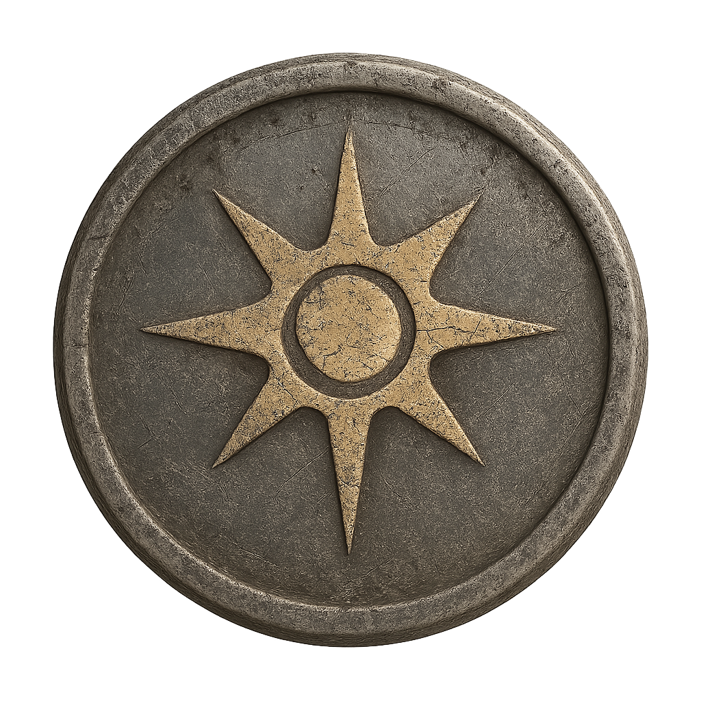

Tempest Domain 
"To command the storm is to speak with the fury of the gods. Lightning is your language, thunder your creed."
Overview
Clerics of the Tempest Domain are vessels of violent weather, divine fury, and the untamable energy of the storm. In Eberron, these clerics often serve the Devourer, Dol Arrah, or other deities associated with natural power and destruction. Their wrath is both a weapon and a warning, and they walk the world as living storms.
Role in Eberron
Tempest clerics are found in coastal regions, aboard storm-riding ships, or at the heart of warfront temples. The Lhazaar Principalities often revere them as weather-shapers, while the faithful of Dol Arrah may call upon them to smite injustice with thunderous precision. Some even walk the wilds of Xen'drik, seen as prophets of elemental chaos or avatars of the Storm Below.
Features by Level
| Cleric Level | Feature | Description |
|---|---|---|
| 1st | Tempest Domain Spells | You gain domain spells at specific levels. These are always prepared and don’t count against your normal prepared spells. |
| 1st | Wrath of the Storm | Use your reaction when hit in melee to deal 2d8 + Wisdom modifier lightning or thunder damage. Uses equal to Wisdom mod (min 1) per long rest. |
| 2nd | Channel Divinity: Destructive Wrath | Use Channel Divinity to deal maximum damage with a lightning or thunder spell instead of rolling. |
| 6th | Thunderbolt Strike | Push a Large or smaller creature up to 10 feet when you deal lightning damage to it. |
| 8th | Divine Strike | Once per turn, deal +1d8 thunder damage on a weapon attack. Increases to 2d8 at 14th level. |
| 17th | Stormborn | You gain a flying speed equal to your walking speed while outdoors. |
Associated Beliefs and Deities
- The Devourer (Dark Six)
- Dol Arrah (Sovereign Host)
- The Storm Below (Cult of the Dragon Below)
Associated Spells
- 1st Level: Thunderwave, Fog Cloud
- 3rd Level: Gust of Wind, Shatter
- 5th Level: Call Lightning, Sleet Storm
- 7th Level: Control Water, Ice Storm
- 9th Level: Destructive Wave, Insect Plague
Notable Characters
- Vaelis d'Lyrandar – Storm-priest of Dol Arrah, airship war-chaplain.